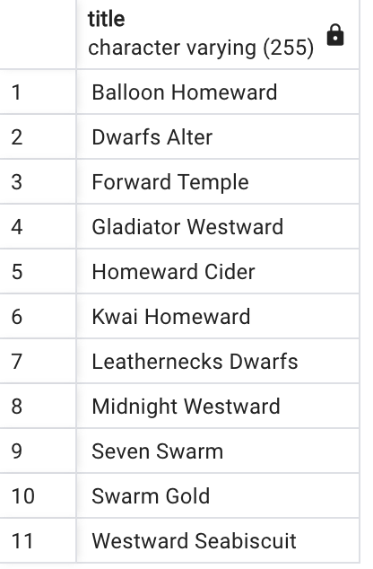
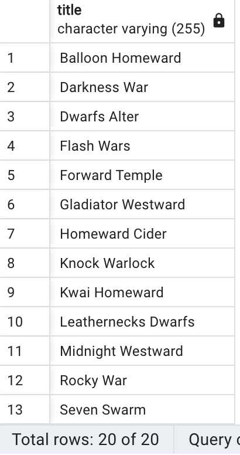
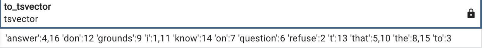
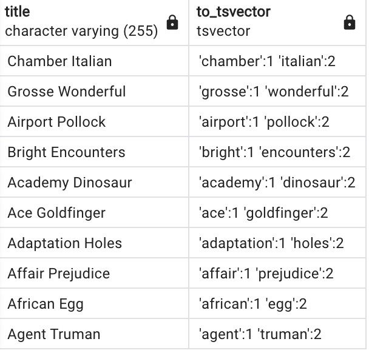
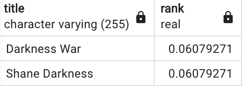
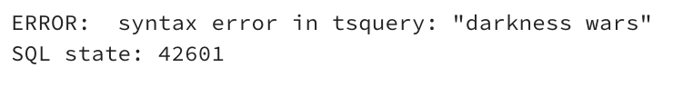
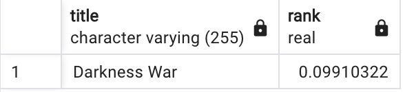
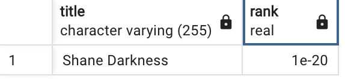

PostgreSQL Full Text Search
- published
- reading time
- 4 minutes
Let’s say we are building an app for searching movies in our private collection. Our app, for simplicity, can only search movies using movie titles. In the following examples we’ll show a few different approaches how to do a full text search using PostgreSQL.
In this tutorial we’re going to use the sample database called “dvdrental” which can be found here.
Full Text Search using LIKE and ILIKE operators
Let’s say we have a movie called “Darkness War” and we want to search it. The first, most easiest, and the least optimized way would be using the LIKE operator and wrapping individual words in % characters:
select * from film where title like '%darkness%' or title like '%war%'
The result:

11 rows, 300 ms
11 results, but we’re missing our desired title - the reason is that LIKE is case sensitive. To fix that, let’s use ILIKE:
select * from film where title ilike '%darkness%' or title ilike '%war%'

20 rows, 500 ms
Now we got our wanted result, but the list seems un-ordered and we miss a ranking system which of the results is a better match to our search query.
Enter tsvector
So this is the star of the tutorial. PostgreSQL documentation states the following:
A
tsvectorvalue is a sorted list of distinct lexemes, which are words that have been normalized to merge different variants of the same word.
We all heard about tokens in this AI language model age, and tokens in a sentence are simply words. Lexems are normalized tokens (words) of a sentence - this normalization may include converting all characters to lowercase, removing punctuation, and applying stemming (reducing words to their root form) to account for variations of the same word.
A tsvector is an ordered list of lexemes, along with their positions and weights. The weights indicate the importance of a particular lexeme concerning the relevance of a document in a search query. A tsvector is essentially an optimized, compressed representation of the lexemes present in a document, which allows for faster full-text searches.
Enough of theory, let’s get our hands dirty!
We can use the to_tsvector function to parse text and turn into a tsvector for us:
select to_tsvector('I refuse to answer that question on the grounds that I don''t know the answer.');

We can also do this to our film titles:
select title, to_tsvector(title) from film limit 10;

To utilize to_tsvector in our full text search engine we’re going to use two additional functions - to_tsquery and ts_rank.
to_tsquery helps us query plain text against a tsvector while ts_rank returns how well our query matches the result. Combining those two in a query we can get ranked results back:
select title, ts_rank(to_tsvector(title), to_tsquery('darkness')) as rank
from film
where to_tsvector(title) @@ to_tsquery('darkness');

20 rows, 400 ms
Let’s try and expand our query and find “Darkness Wars”:
select title, ts_rank(to_tsvector(title), to_tsquery('darkness war')) as rank
from film
where to_tsvector(title) @@ to_tsquery('darkness war');

Syntax error
Uh-oh! We’re getting back a syntax error because to_tsquery only accepts single words without spaces or as the PostgreSQL documentation states:
to_tsquerycreates atsqueryvalue from querytext, which must consist of single tokens separated by the tsquery operators&(AND),|(OR),!(NOT), and<->(FOLLOWED BY), possibly grouped using parentheses.
In other words, we could search for “Darknes Wars” by formating our query like to_tsquery('darkness<->wars') but that would be cumbersome to do each time in the SQL query or messy doing it programatically inside our app.
The solution? websearch_to_tsquery function:
select title, ts_rank(to_tsvector(title), websearch_to_tsquery('darkness war')) as rank
from film
where to_tsvector(title) @@ websearch_to_tsquery('darkness war');

1 result, 60ms
websearch_to_tsquery is a really powerful function and it’s the function I personally like to use the most when using PostgreSQL as my full text search engine. It supports operators inside the query text:
"quoted text": text inside quote marks will be converted to terms separated by<->operators. Also, stop words are not simply discarded, but are accounted for.OR: the word “or” will be converted to the|operator.+: a plus will be converted to the&operator.-: a dash will be converted to the!operator.
This can be utilized greatly to expand your search engine. For example, let’s search for movies that have a word “darkness” in it but do not have the word “war”:
select title, ts_rank(to_tsvector(title), websearch_to_tsquery('"darkness" -war')) as rank
from film
where to_tsvector(title) @@ websearch_to_tsquery('"darkness" -war');

1 result, 100ms
What next?
In the upcoming Part 2 we’ll cover indexes and full text search through multiple columns. After doing that, in Part 3 we’re going to cover how to quickly create an REST api on top of our database using PostgREST and perform our full text search from a client app.